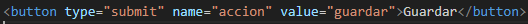

¿Para que sirve un boton?
Un botón en HTML se utiliza para permitir la interacción del usuario con una página web, ya sea para enviar un formulario, ejecutar un script o realizar una acción en el lado del cliente o servidor. Los botones se definen principalmente con el elemento <button>, aunque también puede usarse <input type="button">. El botón puede tener diferentes comportamientos dependiendo del contexto y de los atributos que se le asignen.
type
Define el comportamiento del botón. Los valores posibles son:
submit: Envía el formulario. Es el valor predeterminado.
reset: Reinicia todos los campos del formulario a sus valores iniciales.
button: Se utiliza para botones sin comportamiento predeterminado, típicamente controlados mediante JavaScript.
name
Asigna un nombre al botón que puede ser útil cuando se envían los datos del formulario. Si el botón está en un formulario, este nombre y su valor se enviarán al servidor.
value
Define un valor para el botón que se envía junto con los datos del formulario cuando se hace clic en él (solo en botones de tipo submit o reset).
disabled
Desactiva el botón, lo que impide que el usuario lo haga clic. Un botón deshabilitado no puede recibir eventos de usuario.
autofocus
Este atributo permite que el botón reciba el foco automáticamente cuando la página se carga. Solo puede haber un elemento con autofocus por página.
form
Relaciona el botón con un formulario diferente al que se encuentra. Esto es útil cuando el botón está fuera de la etiqueta <form>, pero necesita estar vinculado a un formulario específico.
formaction
Especifica una URL diferente donde se enviará el formulario cuando se haga clic en el botón. Este atributo solo es aplicable si el botón es de tipo submit.
formenctype
Define cómo deben codificarse los datos del formulario al enviarlo, cuando se usa el botón. Esto es útil para formularios que requieren la subida de archivos, y es válido solo cuando el botón es de tipo submit.
formmethod
Define el método HTTP a utilizar cuando se envían los datos del formulario desde el botón. Solo aplica a botones de tipo submit. Los valores comunes son:
GET: Envía los datos como parte de la URL.
POST: Envía los datos como cuerpo de la solicitud HTTP.
formtarget
Define en qué ventana o marco se abrirá la respuesta del formulario cuando se envía desde este botón. Los valores posibles son:
_self: En la misma ventana (valor por defecto).
_blank: En una nueva pestaña o ventana.
_parent: En el marco padre si la página está en un marco.
_top: En la ventana completa, eliminando cualquier marco.